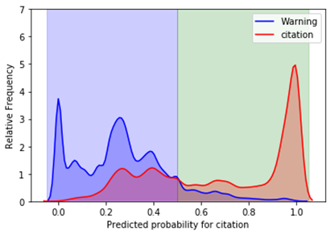

How to Avoid Being
Pulled Over?
Big cities have
big problems. Driving is just one of them.
Montgomery County does
not belong any BIG cities. But being sandwiched between the Washington DC and
Baltimore, driving around is often a struggle. Especially, the rush hour is
full of chaos – with people swiftly and dangerously changing lanes, drivers
honking preceding cars irritatingly, and people breaching the traffic rules.
On the other side,
the state of Maryland is also famous for making
a big sum of money from traffic violations, and sadly the large
fraction of the money comes from the Montgomery county alone. This is a bit intimidating
to Montgomery drivers, but there always ways to protect you from being pulled
over. This blog provides some useful trends of traffic violations and describes
a statistical model to predict whether you get a citation or
warning after being pulled over.
Cleaning data
This study is
based on the data
provided by the Montgomery county government. The data contains several features,
but the most important information is in the Description column. For each violation, traffic officers keep a
note of the violations as text. Depending on the writing style of police
officers, variation in the details, context of the violation and typos, similar
violations has been noted in different format. Just as an example, the use of
telephone has been written in several ways below.
DRIVER USING HANDS TO USE HANDHELD TELEPHONE WHILEMOTOR
VEHICLE IS IN MOTION
DRIVER USING HANDS TO USE HANDHELD TELEPHONE
WHILE MOTOR VEHICLE IS IN MOTION
HOLDER OF LEARNER'S PERMIT 18 Y/OLDER USING A
HANDHELD TELEPHONE WHILE OPER. M/V
.....
.....
HOLDER OF PROVISIONAL LIC 18 Y/OLDER USING A
HANDHELD TELEPHONE WHILE OPER. M/V
DRIVER USING HANDS TO USE HANDHELD TELEPHONE
Technically, the computer understands text as a
string and even a typo or an extra space between words is considered as a different
value. A smarter way to translate computer into a language it can understand is
to convert the text into a mathematical representation. I used word
vectorization method – a natural language processing tool – to convert the text
into an array containing binary numbers. This method first selects the most
relevant words, i.e. the words that carry the most crucial information. For
example, in the texts above, removing ‘TELEPHONE’ or ‘HANDHELD’ alters significantly
the meaning of the text, whereas the words such as ‘A’ and ‘IN’ have a little value
to the meaning of the text. Such high relevant words serve as a word token.
Then it converts the text as an array of numbers each number representation the
presence of word in the string.
Most Common
Mistakes
Below is the list
of most common mistakes listed in the ascending order and in the semantic language
used by police officers. The largest number of violations occur due to the driver’s
failure to obey traffic signal. The implications of this violation are rather
broad, but the second and third violations are easy to deal with: Just having registration
and license protects you a lot from being pulled over. This can easily be done.
DRIVER
FAILURE TO OBEY PROPERLY PLACED TRAFFIC CONTROL DEVICE INSTRUCTIONS
FAILURE
TO DISPLAY REGISTRATION CARD UPON DEMAND BY POLICE OFFICER
PERSON
DRIVING MOTOR VEHICLE ON HIGHWAY OR PUBLIC USE PROPERTY ON SUSPENDED LICENSE
AND PRIVILEGE
DRIVER
FAILURE TO STOP AT STOP SIGN LINE
DRIVING
VEHICLE ON HIGHWAY WITH SUSPENDED REGISTRATION
You Can Get Caught Almost Everywhere:
There is no hotspot
that anyone should be extra careful – you can be caught almost every corner of
the county. Well, as expected, more violations occur in busy streets and
highways but that is because of more density of traffic. An example is the
heatmap of downtown Silver Spring which shows location of pull overs during the
rush hours.
Race, Sex and the Age of Vehicle can Make a Difference:
Even if you get
pulled over, there is a decent chance that you get just a ‘Warning’ which
saves you from an expensive citation fee or going to a court. In an ideal
world, the probability of a driver getting citation or warning should only
depend on the degree of violations he/she commits. But in practice, this
largely depends on subjective perception of the traffic officer, who similar to every other human being can be biased against the
driver’s race, gender, or the age of the car, or can be in a bad mood in a
particular day.
Sorry Hispanic and
Black drivers, you are more likely to receive a citation compared to White and
Asians. Similarly, poor male drivers are more likely to get citation compared
to female drivers. There is also a clear trend that older vehicles are more
likely to get a citation compared to the new ones. All these observations show
a significant racial/gender and economic disparity among the drivers, although
it is not yet clear how much of that is because of racial and gender bias and
how much if any is due to the difference in driving attitudes or other reasons
such as age, economic status, and driving history of the drivers.
Women Drive Less but New and Safe:
Driving is still
considered as manly work in the US, and there is a preconception that men are
better at driving. This
stereotype is also supported by a scientific study suggesting that
women are more dangerous drivers. My analysis tells that this is somewhat
incorrect. Although women drive much less and much faster compared to men, they
actually drive better and follows the rules. They are
also less involved in dangerous accidents (even normalized by their driving population).
This is also proven by a smaller fraction of citations that women receive
compared to men.
Another
interesting fact is that women get to drive newer vehicle compared to men. The
average age of vehicle driven by male drivers is 9.39 years compared to 7.75 years
of average age of vehicle driven by female drivers.
Speeding Drivers:
Driving around big
cities can be sometime like a race – everyone competing for a medal. This is especially
bad during the rush hours when people have to reach
destination in time. Does this attitude depend on people's race, or Gender or
economic status?
I find that there
are number of factors that affects the speeding attitude. First
of all, the drivers having new cars are more likely have speeding
habits. Similarly, White and Asian drivers generally cause speeding compared to
Black and Hispanics. And, women are more likely to cause speeding compared to
men.
Predictive Modelling:
My friend Mr. XYZ is really a bad driver but is
always scared of traffic citations. He wants to know what types of violation
are more likely to get a citation. To help him predicting whether he gets
citation after he gets pulled over after a particular
violation, I run some statistical models using machine learning
techniques. For the purpose of making a model, I first
separated the data into two sets: The first set of data – called Training
data – is data that the statistical model receives. Using the data
features (values of the data) and outcomes (citation or warning), the model
builds the best mathematical equation that captures the trends in the data. I
can check the accuracy of the model on another set of data – called Test
data.
I tested several
learning methods shown in the table below to achieve the better prediction. As
expected, none of the models are 100 % accurate and there are wrong predictions
that cannot be avoided. In statistics, the best way to quantify wrong predictions
are Precision,
Recall, and f1-score,
the details of which are beyond the scope of this blog. The accuracy of model (fraction
of correct predictions) is given by ROC score. The table provides a comparison
of the quality of models under different models.
|
|
|
Precision |
Recall |
f1-score |
ROC
Score |
|
Logistic
Regression
|
Citation |
0.79 |
0.69 |
0.74 |
0.8503871 |
|
Warning |
0.75 |
0.83 |
0.79 |
||
|
Decision
Tree Classifier |
Citation |
0.82 |
0.68 |
0.75 |
0.8614239 |
|
Warning |
0.75 |
0.86 |
0.8 |
||
|
Random
Forest Classifier |
Citation |
0.83 |
0.68 |
0.75 |
0.8655828 |
|
Warning |
0.75 |
0.88 |
0.81 |
||
|
Multi-Layer Perception |
Citation |
0.85 |
0.67 |
0.75 |
0.8656781 |
|
Warning |
0.74 |
0.89 |
0.81 |
Another way of
looking the goodness of these model is the ROC curve – receiver operating characteristic
which classifies the true positive rate (TPR) vs False negative rate (FPR). In
a classification problem like this, even a model that predicts all ‘citations’
gives almost 50% accuracy. The area under between the ROC curve and dotted line
below provides the goodness of the model. Similar to the
table above, all the models give similar accuracy in the test data. The
supporting code of these models is on GitHub.

Some Thoughts:
There is a significant
racial and gender gap in driving: White and Asian drivers are less likely to
receive a citation compared to Hispanics and Black drivers. In the case of
Gender, men are more likely to get a citation compared to women. Interestingly,
the White/Asian/Women are more involved in speeding compared to other
categories. This keeps speeding is not the main problem, which absolutely makes
sense since the large volume of traffic goes not let people speed up during
most of the time. The major fraction of drivers gets pulled over for not
carrying proper documents such as license, registration card. Keeping the
documents up to date will certainly help Montgomery drivers avoid traffic
citations.